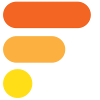
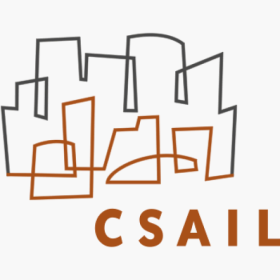

About Me
As an optimist and strong advocate of AGI, I am building the AI-Native Research Infrastructure so that everyone can be a scientist 🧑🎓.
I got my PhD in Computer Science from University of Michigan (UMich), advised by Prof. Mosharaf Chowdhury. My research focuses on building efficient systems that enable researchers to push the boundary of machine learning, including LLM serving systems, LLM training systems(Meta Llama Training Systems) and Agentic RL. To contribute to the research community, I maintain comprehensive paper collections on Private ML Systems and LLM Systems.
I'm always eager to engage in meaningful discussions about research and explore potential academic collaborations. Feel free to reach out via email or schedule a meeting to connect!
What is AI for Science, an AI Co-Scientist, and AI-Native Research Infrastructure?
AI-native research infrastructure replaces the fragmented stack of notebooks, cluster schedulers, and ad-hoc scripts with a unified substrate where hypothesis generation, experiment execution, result analysis, and writeup share one memory and one state. Think of it as an operating system whose processes are research tasks and whose kernel is an orchestrator of AI co-scientists — this is the vision behind Orchestra Research.
An AI co-scientist is an agent that collaborates with researchers across the scientific method — generating hypotheses, designing experiments, writing and executing code, and analyzing results. I co-lead Curie, the first AI-agent framework for rigorous automated scientific experimentation (Curie), and co-created EXP-Bench (ICLR 2026) to evaluate whether AI can conduct AI research experiments end-to-end.
Infrastructure for Science is the systems layer that lets AI-driven research (AI for Science / AI4S) run reliably at scale — the picks and shovels beneath every AI co-scientist. My work covers efficient LLM serving (Andes), rigorous experiment agents (Curie), evaluation benchmarks (Humanity's Last Exam, Nature 2026; EXP-Bench, ICLR 2026), and energy-aware ML infrastructure (ML.ENERGY Benchmark, NeurIPS 2025 Spotlight).
Projects
Orchestra
Vibe Research Platform
Building an AI-native platform for Vibe Research to accelerate scientific research from idea to publication.
Curie
Experiment Agent for Scientific Research
[Year of 2024] Curie is the first AI-agent framework designed for automated and rigorous scientific experimentation.
ML.Energy Leaderboard
Energy Benchmark for LLMs
[Year of 2023] The goal of the ML.ENERGY Leaderboard is to give people a sense of how much energy LLMs would consume.

FedScale
Federated Learning Engine
[Year of 2022] FedScale is a scalable and extensible open-source federated learning (FL) engine and benchmark.
Publications
Awards
- Machine Learning and Systems Rising Stars 🌟 (Program of 2023)
- Shanghai (China) Outstanding Graduate (Top 5%) 2020
Experience
| Company/Institution | Position | ||
|---|---|---|---|
| Meta Superintelligence Lab Menlo Park, CA |
Research Scientist LLM Pre- and Post-Training Systems. |
June 2025 - Feb 2026 | |
| Meta (AI & Systems Co-Design) Menlo Park, CA |
Part-time Research Scientist Cross-Regional Llama Training Systems. |
May 2024 - Dec 2024 | |
| University of Michigan Ann Arbor, MI |
Teaching Assistant Systems for Generative AI (EECS 598) |
Jan 2024 - May 2024 | |
| Apple New York, NY |
PhD Intern Private Machine Learning Framework. |
May 2022 - Aug 2022 | |
 |
MIT CSAIL Database group Cambridge, MA |
Research Intern High-dimensional vector database. Advised by Prof. Sam Madden. |
May 2019 - Jan 2020 |
| University of Michigan Ann Arbor, MI |
Teaching Assistant Database Management (EECS484) |
Sep 2019 - Aug 2020 |
Community Service
| Organization | Position | |
|---|---|---|
| Umich CSE Graduate Students Organization Ann Arbor, MI |
DEI Chair May 2023 - May 2024 |
|
| SJTU-Joint Institute Student Union SH, China |
Vice President June 2017 - June 2018 |
Education
| School | Degree | Year |
|---|---|---|
| University of Michigan | Master & Ph.D in Computer Science | 2020-2025 |
| University of Michigan | B.S.E in Data Science | 2018-2020 |
| B.E in Electrical and Computer Engineering | 2016-2020 |